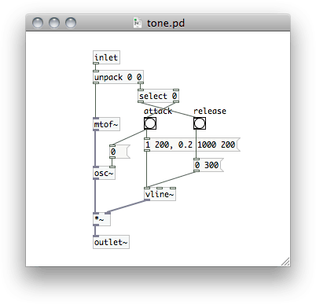
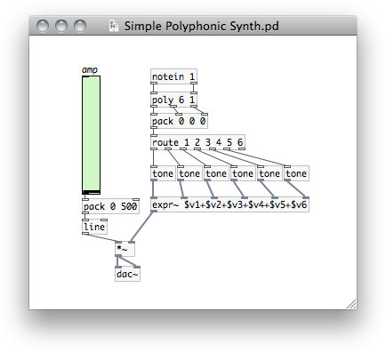

I’ve been playing around with Pure Data for a while now, along with a few other pieces of audio software. The results of this can be heard in the audio for my recent flash game, Pulsus.
Pure Data is a great application which allows you to control every detail building audio applications from very basic components. Unfortunately, much of the program is very poorly documented, so I’d thought I’d share a few things I’ve managed to figure out.
Here’s a quick walkthrough to create a very basic midi controlled, polyphonic synthesizer in pure data. It doesn’t sound like much, but it’ll get things working.
Generating a Tone
This basic synthesizer will consist of two patches, one patch to generate a tone, and another which will read a midi signal and control a few instances of the tone generator.
This is the oscillator patch which generates a tone from a midi message. The tone is created on the left side and the envelope (the change in volume over the course of a note) on the right.
The tone patch has an inlet at the top, which accepts a message containing a pitch/velocity pair, and an outlet at the bottom which sends out the audio signal generated. The [unpack] object splits the pitch and velocity. The pitch is sent to a series of objects on the left side which generate the tone. The velocity is sent to the right where the envelope will be generated.
The pitch, in the form of a midi note number, is converted to a frequency in Hertz which is then sent to an oscillator, generating an sine wave.
Two messages will be sent for each midi note, the first when the note begins and the second when the note ends. The ‘note off’ message will be the same but the velocity will be 0. The velocity, how hard the note was hit, is usually used to set the volume of the note. The velocity is sent to a [select] object. If it is zero, the message is sent to release the note, otherwise to attack. Each of these send a message to a [vline~] object which sends a signal for the amplitude which either ramps up or down.
Finally, the tone is multiplied by the envelope and sent out the parent patch. When the note is hit, a message is also sent to the oscillator which resets the phase.
MIDI and Polyphony
Now that we have our oscillator we need to create a patch which will control a few instances of it. The patch will receive midi data from a hardware controller or from another piece of software. The midi settings will need to be configured for PD to receive the data.
The PD patch which takes midi input and handles the voice allocation, controlling a number of oscillators.
At the top of our patch we have a [notein] object which reads midi from channel 1. [notein] will output pitch/velocity pairs. The [poly] object handles the allocation of different voices. When pitch/velocity pairs are sent to it it sends on the data with the addition of a voice number.
In order to play multiple notes at once, the messages will be routed to a number of different oscillators, each a different ‘voice’. When [poly] receives a note, it will give the number of the first available voice. When it gets a ‘note off’ message (velocity of 0) it makes that voice available again so that that oscillator can play another note when it needs to.
Now we can route the processed messages to a number of instances of the ‘tone’ patch. We do this by packing the messages into lists and using the [route] object which sorts them based on the first element in the message. Awesome. Finally we just add all the signals from the oscillators together and send them to the audio output. It first also multiplies the signal by a amplitude set by the slider so that we can adjust the volume of the synth.
Ok, So What Now?
Now that we have a simple little synth we should be able to get some sounds. A midi signal can come from a physical midi controller or from software. You can use a program, like Ableton Live, to create a composition and then send out midi. You can also create other pure data patches to generate midi. A patch could create generative melodies, act as a sequencer, or create midi from another input such as the keyboard.
The synth at this point just plays a sine wave for each note. It’s a start, but not thrilling. To create different timbres, the [osc~] object can be replaced with something to play different waveforms and we could add modulators or a more complex envelope generator. On top of that we can run the audio signal through filters either in pure data or in other software. A bit of reverb will make it sound a little less flat.
If you have any suggestions post them in the comments. I’m certainly no expert, and I’d love to hear some other methods.
Post Page »
") Intro EP: a collection of electronic musical experiments by Anthony Mattox.
Intro EP: a collection of electronic musical experiments by Anthony Mattox.